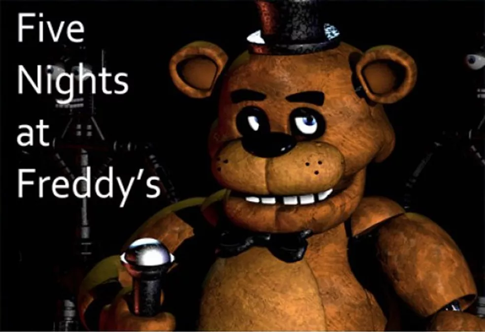

Five Nights At Freddy´s
História
Five Nights at Freddy's
Ambientado no ano de 1993, o personagem principal, cujo nome mais tarde se revela ser Michael Afton "filho do vilão", começou num emprego de guarda de segurança noturno no restaurante da Pizzaria Freddy Fazbear. Uma mensagem de voz deixada gravada pelo antecessor de Mike explica que os personagens animatrônicos utilizados no restaurante - Freddy Fazbear, Bonnie the Bunny, Chica the Chicken e Foxy the Pirate Fox - são deixados funcionando e perambulando livremente pelo estabelecimento durante a noite, porque caso ficassem desligados por muito tempo, seus motores travariam. Ele acrescenta que não se permitia mais que os animatrônicos perambulassem livremente durante o dia desde um incidente conhecido como "a Mordida de 87", em que aparentemente no ano de 1987 um cliente ou funcionário havia sido mordido por um animatrônico e perdeu o lobo frontal, além de ter ficado em coma. O funcionário avisa a Mike que se um dos robôs encontrar uma pessoa à noite, irão achar que se trata de um endoesqueleto de animatrônico ainda sem revestimento, e o introduzirão a força em um revestimento mecânico que acaba matando-o no processo. Algum tempo depois, graças a cartazes vistos no canto do corredor principal, livros e minigames dos jogos seguintes, é descoberto que os animatrônicos movem-se sozinhos porque há almas de crianças dentro dos bonecos. segundo os cartazes e nos outros jogos, cinco crianças identificadas como Gabriel, Susie, Jeremy, Fritz e Cassidy foram mortas por um homem chamado William Afton que usava uma fantasia de coelho animatrônico, e dizem que os corpos das crianças foram colocados dentro das mascotes. Inexplicavelmente, as almas das vítimas tomaram controle dos animatrônicos, e eles atacam o jogador pois acham que ele é o assassino.
Five Nights at Freddy's 2
A história se passa em 1987. O personagem do jogador é Jeremy Fitzgerald, começou a trabalhar como guarda de segurança noturno na melhorada Pizzaria Freddy Fazbear. A mesma pessoa do jogo anterior (só que mais nova) um cara telefona para Jeremy no início de cada noite para explicar a jogabilidade e história. Ele explica que os novos (na época) animatrônicos, que têm um software especial de reconhecimento facial para proteger as crianças de danos potenciais, não foram programados com um modo noturno apropriado, então quando eles não ouvem nenhum som, sua programação lhes diz que eles estão no lugar errado e procuram a fonte sonora mais próxima em busca de pessoas para entreter, lugar que calha de ser o escritório. Assim como no jogo anterior, a programação dos animatrônicos lhes diz que não deveria haver ninguém no restaurante fora do horário do expediente, por isso, ao se depararem com Jeremy, eles acreditarão que ele é um endoesqueleto de animatrônico sem um revestimento e o introduzirão em um revestimento sobressalente de Freddy Fazbear, matando-o no processo. O homem ao telefone explica que o restaurante tem uma fonte de energia ilimitada à noite (ao contrário do jogo anterior), mas não há portas bloqueando o acesso ao escritório, o que obriga o jogador a usar uma máscara sobressalente de Freddy Fazbear para fazer a maioria dos animatrônicos não confundi-lo com um endosqueleto. O jogador será informado de que deve continuamente dar corda em uma caixa de música para evitar que a música pare e a marionete saia de sua caixa e ataque o jogador. O jogador também é informado de que a luz de sua lanterna consegue fazer com que o sistema de certos animatrônicos se reinicie, fazendo-os sair do escritório. À medida que o jogo avança e mais personagens inimigos aparecem, o homem ao telefone informa a Jeremy sobre a presença dos personagens, seus padrões de movimento, e algumas informações de plano de fundo sobre a sua presença na sequela. Por exemplo, o homem ao telefone explica que os animatrônicos antigos estão no novo restaurante, e foram adaptados com a nova tecnologia, mas como eles não funcionaram corretamente, eles são mantidos como fonte de peças de reposição. À medida que o jogo avança, é sugerido que alguma coisa está acontecendo durante o dia, com o homem ao telefone mencionando que há boatos correndo e, mais tarde, que uma investigação policial está em curso. Não se especifica o que exatamente está acontecendo, mas o homem informa que alguém aparentemente entrou no restaurante e "usou um dos revestimentos de animatrônicos" com intenções desconhecidas. Na quinta noite do jogo, Jeremy é informado pelo homem ao telefone de que o restaurante foi colocado em confinamento devido a um evento que ele não vai descrever, mas que é necessário para garantir que nenhum funcionário, atual ou antigo, possa entrar ou sair. O homem também menciona que há uma vaga na segurança do restaurante no período diurno e Jeremy pode ser promovido a ela, e que o proprietário do restaurante antigo chamado "Fredbear's Family Diner" será contactado para dar mais informações sobre os animatrônicos. Na sexta noite, o homem ao telefone informa a Jeremy que o restaurante foi fechado por razões não reveladas, mas ele menciona que alguém usou um "revestimento sobressalente amarelo" e que agora nenhum dos robôs funciona corretamente. Ele também diz a Jeremy que ele vai assumir como guarda de segurança noturno quando o restaurante reabrir. Se Jeremy conseguir sobreviver à sexta noite, ele vai ser promovido para o turno diurno para cobrir uma festa de aniversário no dia seguinte para certificar-se de que os animatrônicos não causem nenhum problema. Um jornal que é mostrado na tela de vitória da sexta noite diz que o restaurante irá fechar e os novos animatrônicos serão desmontados, mas os antigos serão guardados para quando o restaurante reabrir, insinuando os eventos do primeiro jogo. No nível Noite Customizada, Jeremy é substituído por um novo personagem jogador chamado Fritz Smith devido à promoção de Jeremy. Se o jogador conseguir vencer a Noite Customizada, ele descobre que Fritz foi demitido por "mexer nos animatrônicos" (por ser capaz de mexer na IA) e por "mau cheiro", uma referência à mensagem do nível customizado do jogo anterior. Alguns dizem que, Jeremy Fitzgerald é a vítima da mordida de 87, pois o Phone Guy diz " mantenha-se perto dos robôs para evitar qualquer problema ou acidente", quando ele diz "mantenha-se perto dos robôs" seria a mesma coisa de "deixe uma chance dos robôs te arrancarem o lóbulo frontal".
Five Nights at Freddy's 3
Five Nights at Freddy 3 está definido trinta anos depois dos eventos do jogo original. O jogador assume o papel de um funcionário recém-contratado pela Fazbear's Frights, uma atração de horror temática baseada nos mistérios não resolvidos da Pizzaria Freddy Fazbear, construída usando apetrechos recuperado dos restaurantes originais. Durante a semana antes da atração está prevista a abertura ao público, o jogador deve vigiar a instalação do Serviço de Segurança durante o turno da noite (00:00-06:00 em tempo de jogo), usando uma rede de câmeras de vigilância colocadas nos quartos e saídas de ar. Além disso, o jogador deve monitorar o status de sistemas operacionais - três câmeras, áudio e ventilação - e reiniciá-los quando eles começarem a falhar. Problemas com a câmera causam feeds de vídeo, já mal iluminados e distorcidos, se tornando totalmente obscurecido por estática. Se a ventilação falhar, o jogador começa a ter alucinações e ver fantasmas dos animatrônicos dos jogos anteriores, que podem causar avarias adicionais. Depois da primeira noite, a equipe da Fazbear's Frights descobriram, um animatrônico deteriorado, um coelho amarelo, que eles se referem como Springtrap. E o Cara do Telefone sempre se refere a ele como Spring Bonnie. O jogador deve impedi-lo de entrar no escritório e atacar; se isso acontecer, o jogo termina. O jogador pode selar as saídas de ar em certos pontos para bloquear o seu progresso, mas não pode selar a entrada da ventilação que leva diretamente para o escritório. O sistema de áudio pode ser usado para reproduzir efeitos sonoros que afasta Springtrap do escritório. Com o progresso das noites, o jogador ouve uma série de fitas cassete de instruções, semelhantes às chamadas telefônicas dos dois primeiros jogos, que instruem os funcionários como operar o terno Springtrap, que podem ser usados por ambos os seres humanos e endosqueletos animatrônicos. No entanto, fitas posteriores desencorajam o uso do terno pelos funcionários devido a uma série de acidentes fatais envolvendo a falha de mecanismo springlock do terno. Minigames de baixa resolução entre noites insinuam o passado conturbado do restaurante, com minigames das quatro primeiras noites "que descreve os animatrônicos originais seguindo na sequência uma sombra roxa escura antes de serem violentamente desmontados por William Afton, anteriormente visto nos minigames de Five Nights at Freddy's 2 como o homem responsável pelos vários assassinatos que ocorreram ao longo da história ficcional da franquia. Em um minigame na quinta noite, os fantasmas das cinco crianças que habitavam os animatrônicos aparecem, William, tenta proteger-se escondendo-se no terno Springtrap. No entanto, o defeituoso mecanismo de springlock do terno falha, e é esmagado pelo traje e as almas das crianças desaparecem, deixando seu assassino para sangrar até a morte. Ao contrário das entradas anteriores, Five Nights at Freddy's 3 contém dois finais, dependendo se o jogador tenha encontrado e completou todos os minigames escondidos dentro do jogo principal. Algumas delas estão disponíveis apenas nas noites específicas, enquanto outros podem ser acessados durante qualquer noite. O "final ruim" é alcançado a partir de completar o jogo sem completar todos, ou nenhum dos minigames escondidos, e mostra uma tela que descreve as cabeças dos cinco animatrônicos do primeiro jogo com os olhos iluminados, indicando que as almas das crianças desaparecidas não foram libertadas. Completando todos os minigames escondidos antes de completar o jogo ganha o "bom final", que é o mesmo ecrã, conforme descrito anteriormente, mas com a cabeça dos animatrônicos desligadas, indicando que as almas das crianças desaparecidas foram libertadas, e elas podem finalmente descansar em paz. Completando as cinco noites desbloqueia uma noite bônus, "Nightmare", o que aumenta a dificuldade do jogo, semelhante a "Noite 6" nos títulos anteriores. Ao jogar o modo, uma gravação arquiva todos os locais da Pizzaria Freddy Fazbear: quartos seguros, uma sala de emergência adicional não registrados nos animatrônicos sistemas de inteligência artificial ou de segurança, serão permanentemente selado, instruindo os funcionários a não contar a ninguém de sua existência. Quando esta noite é concluída, um recorte de jornal revela que Pavores Fazbear é destruída em um incêndio logo após os eventos do jogo, e que qualquer peças recuperáveis a partir da atração vão ser leiloadas. No entanto, iluminando a imagem revela Springtrap em segundo plano, o que sugere alguma forma ele sobreviveu, deixando seu destino desconhecido.
Five Nights at Freddy's: Sister Location
Lançado em 7 de outubro de 2016, este jogo se passa em um lugar conhecido como Circus Baby Entertainment And Rentals, onde acompanhamos o trabalho de um técnico noturno que noite após noite realiza manutenções em diversos animatrônicos do lugar. Para continuarmos vivos, devemos aprender as mecânicas de cada animatrônico presente no jogo, seja andando sem fazer muito barulho ou monitorando frequentemente a movimentação deles. Durante as noites nos temos algo diferente dos outros jogos,ao inves de sermos guiados por homens em telefones ou fitas cassetes somos guiados por robos. O primeiro funciona como um tipo de inteligencia artificial do local chamada HandUnit que nos orienta sobre o basico,mas ele só fala oque ele quer que você saiba quem realmente te ajuda e a animatrônica principal do local chamada Circus Baby.Ela te ensina como derrotar os Bidybads e a Ballora na segunda noite, ainda nessa noite HandUnit honestamente o ajuda a passar pelo Funtime Freddy. Depois na terceira noite, você consegue ouvir um áudio secreto da Circus Baby que conta como ela já capturou e matou uma menina que mostra que ela foi feita para capturar crianças, depois mais uma vez honestamente HandUnit o ajuda a derrotar Funtime Foxy e Bonbon, mas no final da noite você acaba morrendo para Funtime Foxy automaticamente, sem poder fazer nada para impedir, na quarta noite você é instruído por Circus Baby como manusear um traje de springloock enquanto enfrenta as Minireenas assim na ultima noite você é levado para a Sala de Desmonte e acaba levando um golpe de uma garra de metal chamada Scooper que arranca seus órgãos, e sua pele é usada para Circus Baby junto com todos os outros animatronicos Funtime Freddy, Funtime Foxy e Ballora fugirem se passando por você
Freddy Fazbear's Pizzeria Simulator
Cawthon lançou o Freddy Fazbear's Pizzeria Simulator gratuitamente na Steam no dia 4 de dezembro de 2017 depois de provocar o jogo alguns dias antes. O jogo parece jogar como um jogo de simulação de restaurante para planejar e executar a Pizzaria própria de Freddy Fazbear, mas acaba envolvendo vários mini-jogos que estão na mesma veia de horror de sobrevivência que os outros jogos principais da série. Os elementos da parte de simulação do restaurante afetam as partes do jogo semelhantes às séries principais
Ultimate Custom Night
Ultimate Custom Night, um jogo que conta com o modo "noite personalizada" visto em jogos anteriores, foi lançado em 27 de junho de 2018.[4][5] A noite personalizável permite que o jogador escolha entre mais de 50 animatronics de todos os outros seis principais jogos de Five Nights at Freddy's , bem como do spin-off, FNaF World, e defina suas dificuldades (entre 0 e 20) para determinar o quão agressivo eles são durante a noite. O jogador também pode selecionar o escritório em que deseja jogar e tem 16 modos de jogo temáticos disponíveis para eles.[6][7] Originalmente, Ultimate Custom Night era para ser um DLC de Freddy Fazbear's Pizzeria Simulator, mas acabou por se tornar num jogo independente.
Five Nights at Freddy's World
Em setembro de 2015, Scott Cawthon anunciou que estava desenvolvendo um novo jogo spin-off, intitulado Five Nights at Freddy's World.[8] O jogo não é de terror, e sim um RPG eletrônico, utilizando os vários personagens animatrônicos dos outros jogos. Scott mostrou no anúncio que o jogo é um spin-off, considerando que o arco principal dos jogos anteriores foi completado com o quarto jogo. A demo foi programada para ser lançada um momento antes do jogo completo, que foi programado para ser lançado em 2016.[9] Os personagens serão os antagonistas de cada jogo, e se chamarão com os seus nomes com a adição da palavra Adventure (Ex.: Adventure Freddy). Em FNaF World você pode poderá escolher dois times principais com quatro integrantes cada para usa-los em batalha. Inicialmente seus times são Freddy, Bonnie, Chica e Foxy no time azul e Toy Freddy, Toy Chica, Toy Bonnie e Mangle no time rosa. Cada integrante possui 3 ataques que tanto podem ser ofensivos (atacando os inimigos), restaurativos (onde se pode restaurar sua vida no time) ou evolutivos (onde se pode aumentar ataque, velocidade e defesa do time enquanto batalha). Se caso todos os personagens morrerem você perderá a partida e será redirecionado ao lugar onde tudo começou. Em FNaF World, as orientações de FredBear, que te mostrará os locais dos misteriosos itens "glitchados", que te darão teletransporte ao mundo glitchado ou através dele você terá acesso a lugares no mundo. Você começará em Fazbear Hills, lugar que lembra muito uma vila em uma floresta, com algumas construções e uns vendedores.Five Nights at Freddy's: Help Wanted
Em 18 de agosto de 2018, Cawthon confirmou em seu tópico no Steam que ele estaria fazendo um Five Nights no jogo de realidade virtual de Freddy para o PlayStation VR. Segundo o site do jogo, os jogadores assumem o papel de um técnico que repara os animatrônicos para uma pizzaria não identificada.[10] O jogador controla o jogo a partir de uma perspectiva em primeira pessoa, e realiza tarefas como consertar os animatrônicos, resolver quebra-cabeças e navegar em corredores escuros, evitando os animatrônicos com mau funcionamento e hostis. O jogo terá vários locais da franquia FNaF, como mostrado em teasers embutidos no trailer. Além disso, a maioria dos animatronics de jogos anteriores da série estará no jogo. Em 25 de março, durante o canal State of Play da Sony, anunciando vários novos jogos chegando ao PS4, um trailer do jogo foi exibido.[11] Após o jogo ser lançado para plataformas como consoles, computadores, e dispositivos móveis, o título do jogo foi alterado apenas para Help Wanted, sem VR.
Five Nights at Freddy's: Security Breach
Five Nights at Freddy's: Security Breach foi lançado dia 16 de dezembro de 2021 para PlayStation 4, PlayStation 5 e Microsoft Windows[12]. O Jogo apresenta um lugar enorme chamado de Pizzaplex, onde os animatrônicos (Glamrock Freddy, Glamrock Chica, Montgomery Gator e Roxanne Wolf) estão se apresentando num palco com um público animado. O jogo se passa em 2029. O jogador tem o apoio de Glamrock Freddy para escapar do Pizzaplex. Mas todos os Animatronics tem o controle de VANNY. Freddy não está sendo controlado por VANNY pois entrou em modo de segurança pelo motivo de Gregory estar em sua cavidade peitoral. Causando que VANNY e Cliente 46 não o controle. Há teorias que Freddy está possuído por uma alma que quer ajudar Gregory.
Personagens e extras
Personagens principais:
Freddy
Personagem principal da franquia e símbolo dela, introduzido pela primeira vez em FNAF 1, ele é um urso que veste gravata borboleta preta e cartola preta e utiliza um microfone (por ser o vocalista da banda) e em todos os jogos ele aparece, tendo várias versões, como: toy freddy, whitered freddy, nightmare freddy, funtime freddy, etc (teve ter umas 100 variantes). Ele é um dos prsonagens mais querido da franquia.
Bonnie
Primeiro personagem criado por Scoot Cawton (criador de FNAF) e, na opinião do criador, é o animatronic mais assustador, por ter tido vários pesadelos com ele. Originalmente era para ser o animatronic que correria pelo corredor, mas logo foi substituido por Foxy. Bonnie apareceu em todos os jogos exceto em Security Breach, onde apenas aparece como um easter egg. Dentre algumas de suas variações, temos: Toy bonnie, whitered bonnie, nightmare bonnie, funtime bonnie, etc. Ele é coelho guitarrista da banda e possui uma guitarra.
Chica
Chica é uma galinha que usa babador escrito:"Let's eat!". Traduzindo:"Vamos comer". Ela segura um prato com um cupcake que também e um personagem. Na banda, ela pode ser considera uma "líder de torcida" como podemos dizer, por não ter um instrumento ou algo do tipo. Dentre das várias variações dela temos: toy chica, whitered chica, nightmare chica, funtime chica, etc.
Foxy
Foxy é um dos personagens mais queridos de FNAF, ele é o único dos 4 principais que não e parte da banda. Ele possui uma sala especial para ele chamada "Pirate Cove". No jogo podemos ver que em frete de sua sala existe
Criadores
Os desenvolvedores de FNAF são:
Scoot Cawton ( criador do jogo ), Steel Woll Studio, Illumix ( empresas que ajudaram a criar outros jogos de FNAF )
As publicadoras de FNAF são:
Steam, App Store, Goggle Play, PlaStation.
A distribuidora de FNAF é:
ClickTeam USA LLC.
O criador de FNAF é:
Scoot Cawton.